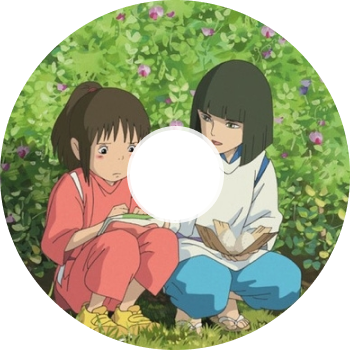
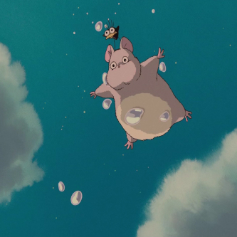

본문콘텐츠영역
Story
- 어느날, 어떤 연유로 인해 시골로 이사를 가게 된 치히로의 가족. 여느 아이들과 달리 겁이 많고 소심하지만 심지 굳은 소녀 치히로는 새로운 곳에 대한 낯설음과 두고온 친구들에 대한 그리움에 의기소침해있다. 그런데 치히로의 아버지가 운전 중 길을 잘못 드는 바람에 의문의 터널 앞에 도착하고, 그 너머 신의 세계로 들어오게 된다. 그곳에는 거의 폐허가 되어 공터만 남은 어느 유원지가 있었다. 부모님은 원래 목적지를 잊었는지 무언가에 홀린 듯 안으로 들어갔고, 맛있는 냄새를 풍기는 포장마차에서 사람이 아무도 없자 허락도 구하지 않고 음식을 마구 먹는다. 치히로는 분명히 주인이 있다고 생각하여 부모를 말리지만 아빠는 돈도 있고 카드도 있으니 걱정 말라고만 한다. 그 모습에 질린 치히로는 여기저기 돌아다니다가 기묘한 여관을 발견하고 다가간다.


- 그때 '하쿠'라는 낯선 소년이 나타나 어두워지기 전에 돌아가라고 경고하고, 여관에 불이 켜지자 "내가 시간을 벌 테니까 무조건 강으로 뛰어!" 라고 말한다. 치히로는 강으로 달려가다가 부모님을 떠올리고 음식점으로 돌아오지만 두 사람은 이미 돼지로 변해 있었고, 이를 보고 경악한 치히로는 그 자리에서 도망친다. 그 와중에 주변은 점차 밤이 되어 어두워지고 사방에서 그림자처럼 생긴 이상한 존재들이 계속 나타난다. 왔던 길로 돌아가려 해도 부모님과 지나온 들판은 이미 강으로 변해 있고, 이상한 존재들이 점점 더 많이 나타나자 치히로는 패닉에 빠진다. 그 와중에 몸이 투명해지기s까지 하는 치히로를 하쿠가 신의 세계의 음식을 먹여 원래대로 돌려놓는다. 이후 하쿠의 도움으로 여관에 잠입하고, 온천장의 주인인 유바바와 계약을 맺고 온천장에서 일해야 부모님과 함께 원래 세계로 돌아가는 방법을 찾을 수 있다는 조언을 듣곤 하쿠와 헤어진다.
Character
- 오기노 치히로 / 센
- 극장 애니메이션 센과 치히로의 행방불명의 주인공이다.
- 하쿠
- 극장 애니메이션 센과 치히로의 행방불명의 남자 주인공이다.
- 유바바
- 작품의 배경이 되는 신들이 이용하는 목욕탕 '油屋'의 경영자로, 이등신의 할머니다.

- 가마 할아범
- 유바바가 운영하는 온천장의 보일러실에서 일하는 할아버지 요괴.

- 가오나시
- 이름의 뜻은 얼굴 없음이며, 그 뜻 그대로 얼굴이 있어야 할 부분에 가면만 있고 입은 몸통에 따로 있다.
- 린
- 온천에서 일하는 젊은 종업원인 여우 요괴 소녀. 괄괄한 성격에 목소리 큰 아가씨다.
- 제니바
- 유바바의 쌍둥이 언니로, 역시 쌍둥이라서 유바바와 매우 비슷하게 생겼다.
- 보우
- 유바바의 아들이자 제니바의 조카. 엄청난 신체 스펙을 자랑한다.
Trailer
센과 치히로의 행방불명은 일본에서 2001년에 개봉하고, 국내에는 2002년에 개봉했다. 국내에서 크게 흥행하게 되었는데, 최종적으로 서울 관객 90만 명, 전국 200만이 넘는 관객을 불러모았고 1,138만 달러의 수입을 얻었다. 이는 일본 다음으로 세계 흥행 2위의 수치다.
- “ 치히로, 고마워. 진짜 내 이름은 니기하야미 코하쿠누시야. ”
OST
주제곡인 '언제나 몇번이라도'를 제외한 모든 곡을 히사이시 조가 담당하였다.
워낙에 좋은 곡들이 많아서 근 22년이 지난 지금도 TV프로그램이나 라디오, 유튜브 등의 여러 매체에서 쓰이고 있다.
- 
언제나 몇번이라도
いつも何度でも 어느 여름날
あの夏へ-
또 다시
ふたたび 
6번째 역
６番目の駅
Gallery
센과 치히로의 행방불명은 감독의 전작 모노노케 히메와 함께 일본 애니메이션을 넘어서 현대 문화사를 빛낸 영화들 중 하나로 여겨지는 걸작이자 일본 애니메이션 역사상 최고의 영화라고 평가받고 있다.

- 